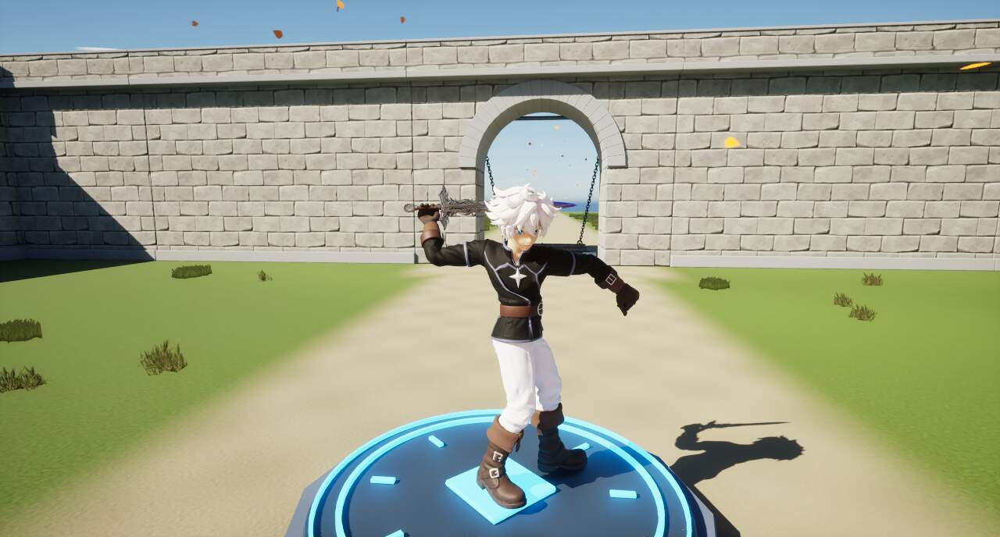
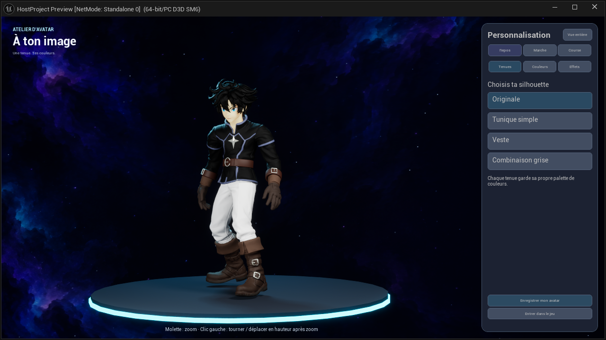

Avatar
Dans ce dossier
Dans cette page
État courant · V27
Version V27 · 23 octobre 2026. Les précisions ci-dessous constituent l’état courant ; les campagnes et versions précédentes restent consultables dans le volet historique.
L’avatar dispose de 2 000 points d’endurance et récupère 45 points par seconde dans les états qui autorisent déjà la récupération. Les coûts d’action restent inchangés. Après trois secondes sans subir de dégâts, il récupère un point de vie par seconde, sans dépasser ses PV maximum. De nouveaux dégâts réinitialisent ce délai ; la pause solo ne le fait pas avancer.
Organisation, captures et validation V27 · Gestion des ombres
Guide détaillé et historique antérieur à V27
ÉTAT DU PROJET · 21 OCTOBRE 2026
L’avatar : guide complet
Modèles, tenues, contrôles, animations, armes, effets, personnalisation et maintenance.
Épée V20 : deuxième geste plus naturel · 21 octobre 2026
Version active, vérifiée en solo. Le retour du deuxième coup et son raccord vers la préparation suivante sont plus compacts : le coude se replie sous l’épaule au lieu d’entraîner le bras très loin derrière le torse. La préparation reste haute pour conserver la lecture du prochain coup.
La correction est inscrite dans /Game/Avatar_GardeRobe_V2/Animations/Combat/Epee/ClicGauche/ComboQuatreCoups/AN_Epee_ComboQuatreCoups, toujours jouée par AM_Epee_ComboUneMain. Elle concerne les rotations de la clavicule, du bras et de l’avant-bras droits, sur le raccord source 2,16–2,88 s et la sortie dédiée du deuxième coup, 9,60–10,10 s. Les translations, échelles, appuis, bassin, torse, tête, doigts et prise locale de l’épée sont conservés.
Les quatre instants d’impact et la cadence RateScale = 1,4256 restent ceux du tableau du combo à quatre mouvements. Les trois autres frappes conservent leurs contacts et leurs phases actives ; le raccord après le deuxième est la seule préparation resserrée. Le montage, le Blueprint du personnage et le modèle d’avatar ne sont pas remplacés. La séquence garde ses 730 clés à 60 Hz et sa durée source de 12,15 s, sorties comprises ; aucun calcul supplémentaire de correction n’est ajouté pendant le jeu.

Voir les huit captures natives avant/après. Ces images comparent les mêmes poses ; les essais de commandes ci-dessous utilisent séparément le véritable personnage, son graphe d’animation et les entrées du jeu.
| Validation | Résultat |
|---|---|
| 140 contrôles des poses et des raccords | Nombre de clés, longueurs des os, échelles, pistes conservées, quatre poses d’impact, boucle et sortie du deuxième coup contrôlés. |
| Quatre essais réels en solo | Clic bref : 1 frappe ; maintien court : 2 ; combo maintenu : 6 ; clics en marche : 7. Retour au repos dans chaque cas, sans redémarrage prématuré ni déplacement autonome pendant les trois cas à l’arrêt. |
| Contrôle après enregistrement | Écart maximal de pose de 0,000147° ; montage, Blueprint du personnage et modèle identiques à leurs copies avant V20. |
Retours récupérables : séquence avant V20 et montage conservé, dans Saved/CodexTools/SwordShoulderV20/Backup_Before_V20. L’export réel, les clés corrigées et les scripts de préparation restent dans Saved/CodexTools/SwordShoulderV20. Les anciens FBX ou projets Blender ne contiennent pas automatiquement cette correction : vérifier la séquence active avant une réimportation.
Caméra basse : herbe et vêtements
L’herbe proche de l’objectif devient progressivement transparente entre 2,20 m et 0,95 m, avec un fondu temporel. Au-delà de 2,20 m, son masque habituel est conservé. Le paramètre CameraGrassFade des deux matériaux permet de désactiver le fondu pour comparaison. Les faces intérieures des quatre tenues et du raccord/doublure du col sont rendues, sans rendre l’avatar translucide. La sonde caméra solo passe de 12 à 35 cm ; la plage de regard −60° à +85° reste disponible. Le rendu double face corrige les surfaces invisibles vues de l’intérieur ; il ne reconstruit pas une géométrie absente.
Mort et retour sur la plaque · 19 octobre 2026
En solo, la mort bloque les déplacements, attaques, esquives, sauts et accroupissements. Le corps reste à son emplacement ; s’il meurt en l’air, il tombe verticalement jusqu’au sol. La caméra orbitale et la pause restent disponibles. Les dégâts et les poussées sont neutralisés pendant toute la séquence.
Après 3 secondes de jeu, le même personnage est replacé couché sur le point de retour de la plaque existante. Il se relève en 2,8 secondes avec appui des mains puis d’un genou. Les commandes, collisions, points de vie et endurance reviennent seulement à la fin réelle de l’animation. Une nouvelle notification de mort ne redémarre pas les délais. La pause suspend aussi la progression de la séquence.
La tenue, les couleurs et les réglages de cheveux/clignement sont conservés. Le composant de réanimation cesse de fonctionner à chaque image une fois le personnage vivant. Le comportement du personnage natif multijoueur reste distinct : ce nouveau relèvement concerne le solo.
71 contrôles fonctionnels couvrent deux morts successives, dont une en l’air, les actions déjà engagées, les tentatives d’attaque et de déplacement pendant la mort, une poussée injectée, la caméra, la pause, les délais, la même plaque, l’apparence et la reprise des commandes. Ce contrôle n’est pas une campagne multijoueur.
Animation active : /Game/Avatar_GardeRobe_V2/Animations/Reanimation/AN_Relever. Source : Art/Avatar_Reanimation_V1/Avatar_Relever.blend, 65 os communs avec AN_Mort, racine fixe, départ raccordé à la pose finale de mort, retour exact à la pose debout. Gestion : UAvatarResurrectionComponent dans le plugin, composant ReanimationAvatar du personnage et BP_BaseControleur.Reapparaitre. La plaque BP_PlaqueRespawn.PointRetour reste la référence.

Périmètre et lecture du document
L’avatar est un personnage humanoïde stylisé, personnalisable et animé dans Unreal Engine 5.8. Son apparence et ses effets sont portés par le plugin AvatarRuntime. Le gameplay solo reste principalement dans un Blueprint ; le personnage multijoueur utilise une classe native dédiée et un graphe de pose dérivé du solo.
Cette documentation décrit l’état utilisé aujourd’hui, pas la succession des aperçus V1, V2, V3… Un fichier conservé dans SourceArt ou dans un dossier d’archives ne prouve pas qu’il est encore joué en jeu. Les différences de règles entre solo et multi sont détaillées dans leurs documents respectifs.
Architecture et points d’entrée
| Élément | Rôle actuel |
|---|---|
BP_AvatarCharacter | Personnage solo : commandes, ressources, combat, inventaire, recrutement et déclenchement des animations. Chemin : /Game/ElemntsForGame/AvatarMain/Animations/Another/Animations/BP_AvatarCharacter. |
ABP_Avatar_V2_Base | Graphe de pose solo : locomotion, sauts, chute, accroupissement, couches épée et arc. Chemin : /Game/Avatar_GardeRobe_V2/Gameplay/ABP_Avatar_V2_Base. |
AAvatarNetworkCharacter | Personnage réseau : validation serveur, déplacement répliqué, actions synchronisées, mort et réapparition. |
ABP_Avatar_Reseau_Solo | Pose utilisée en multi. La copie du graphe solo est alimentée par les données du personnage réseau, sans dépendre du joueur local du solo. |
UAvatarAppearanceComponent | Tenue, couleurs, matériaux dynamiques, clignement, vent, profil local et ouverture du studio. |
UAvatarBowComponent | Arc solo et présentation visuelle partagée avec le réseau ; flèches, jauge, réticule et nombres de dégâts. |
AAvatarCustomizationStage | Scène de présentation indépendante du personnage de gameplay. Caméra, éclairage, cadrage et animations de démonstration. |
Sources du projet : AvatarNetworkCharacter.cpp, AvatarNetworkAnimation.cpp, AvatarAppearanceComponent.cpp.
Modèles, squelette et tenues
Les quatre tenues sont des modèles squelettiques complets partageant SKM_Avatar_Originale_Skeleton. Le changement de tenue remplace le modèle tout en conservant le système d’animation. Il ne s’agit pas d’un assemblage libre de toutes les pièces de chaque tenue.
| Tenue | Identifiant | Zones de couleur spécifiques |
|---|---|---|
| Combinaison grise | combinaison | ["OutfitMainColor", "SleeveColor", "PantsColor", "TrimColor"] |
| Originale | originale | ["OutfitMainColor", "PantsColor", "GlovesColor", "BootsColor", "CuffsColor", "BeltColor", "TrimColor", "MetalColor", "SolesColor"] |
| Tunique simple | tunique | ["OutfitMainColor", "PantsColor", "GlovesColor", "CuffsColor", "BootsColor", "SolesColor", "BeltColor", "MetalColor", "CollarInnerColor", "TrimColor"] |
| Veste | veste | ["OutfitMainColor", "UndershirtColor", "PantsColor", "GlovesColor", "CuffsColor", "BootsColor", "SolesColor", "TrimColor", "CollarInnerColor"] |
Les cheveux, les iris et la peau sont réglables indépendamment de la palette du vêtement. Les palettes de vêtements sont conservées par tenue : changer de tenue ne doit pas effacer les couleurs choisies sur les autres. Les noms de zones sont des paramètres techniques ; l’interface les traduit en « Torse », « Manches », « Bottes », « Intérieur du col », etc.
Le modèle d’origine chargé par le personnage réseau est SKM_Avatar_Originale. Les autres modèles sont SKM_Avatar_Tunique, SKM_Avatar_Veste et SKM_Avatar_Combinaison, dans /Game/Avatar_GardeRobe_V2/Mesh. Les définitions de tenues sont dans /Game/Avatar_GardeRobe_V2/Settings/DA_Tenue_*.
Sources Blender et réimportation
Les chemins ci-dessous sont ceux enregistrés dans les données d’import des modèles actuels. Ils sont plus fiables que le numéro le plus élevé d’un dossier d’aperçu.
| Modèle | FBX source enregistré |
|---|---|
| Originale | SKM_Avatar_Originale_DeformationV7.fbx |
| Tunique | SKM_Avatar_Tunique_Combat.fbx |
| Veste | SKM_Avatar_Veste_Col.fbx |
| Combinaison | SKM_Avatar_Combinaison.fbx |
Le fichier Blender_Jeu_Actuel/Avatar_Jeu_Actuel.blend existe, mais plusieurs corrections ultérieures ont leur propre fichier source. Il ne faut donc pas considérer ce fichier consolidé comme automatiquement synchronisé avec toutes les modifications les plus récentes d’Unreal.
- Partir du FBX source correspondant à la tenue modifiée et retrouver le projet Blender associé dans le même dossier ou dans les scripts de génération.
- Conserver les noms, la hiérarchie, les axes et l’échelle du squelette partagé. Ne pas recréer arbitrairement un second squelette lors du réimport.
- Préserver les morph targets utilisés par le clignement et les matériaux/slots qui portent les couleurs.
- Pour une correction de vêtement, vérifier les poids de peau au col, aux épaules, aux aisselles, à la ceinture et à l’entrejambe. Une animation plus douce ne répare pas un maillage troué ou un mauvais poids.
- Réimporter le modèle existant, puis rejouer les cas extrêmes : accroupi, attaque au sommet, fin du revers, esquive et arc tendu.
- Pour une nouvelle animation, contrôler les trajectoires des mains, les appuis et les raccords dans le montage réellement référencé, puis vérifier solo et réseau.
Sources du projet : Avatar_Jeu_Actuel.blend, documentation_assets.json.
Personnalisation et studio galactique
Le menu Échap donne accès à « Personnaliser l’avatar ». Le studio est chargé séparément via /Game/Avatar_GardeRobe_V2/Preview/L_PersonnalisationAvatar. L’avatar de présentation reçoit l’apparence du personnage ; il n’est pas le pion qui se déplace et combat sur la map.
- Tenues : choix entre les quatre modèles.
- Couleurs : sélection d’une zone, palette et réglages de couleur. La caméra se rapproche automatiquement de la zone.
- Effets : réglages liés au clignement et au vent présents dans l’interface.
- Repos, marche, course : démonstrations pour inspecter la tenue en mouvement.
- Clic gauche maintenu + déplacement horizontal : rotation autour de l’axe vertical seulement.
- Molette : zoom et dézoom. Le déplacement vertical de la souris permet de recadrer lorsque le cadrage est rapproché.
- Enregistrer mon avatar : écrit le profil. « Enregistrer et revenir » applique le résultat au retour au jeu.
Le fond galactique animé utilise M_Studio_Galaxie. Le socle mat utilise MI_Studio_Socle_Mat. La caméra a un champ de vision de 38°, un recadrage adouci de 0,48 s et un zoom interpolé sur 0,16 s. Le studio désactive son flou de mouvement et sa profondeur de champ ; un éclairage de remplissage sans ombres ouvre les plis du pantalon. Ces réglages concernent cette présentation, pas toute la lumière du level.
La rotation ne modifie ni l’inclinaison ni le roulis. Le zoom est borné pour éviter de traverser le personnage ; le recadrage vertical reste entre les pieds et au-dessus de la tête. Le cadrage tient compte de la largeur du panneau et de la taille de la fenêtre.
Sources du projet : AvatarCustomizationStage.cpp, AvatarWardrobeWidget.cpp, SAvatarPreviewSurface.h.
Profil d’apparence et petits mouvements
Le profil local est enregistré avec SaveGameToSlot, sous le nom FallenNecroma_Appearance_V2. Il contient l’apparence, pas une sauvegarde complète du monde. En multijoueur, la tenue et les couleurs actives sont envoyées au serveur lors de l’arrivée et à la validation du studio, puis présentées aux autres joueurs.
| Réglage par défaut du composant | Valeur |
|---|---|
| Intervalle aléatoire entre clignements | 2,8 à 5,2 s |
| Fermeture / maintien / ouverture | 0,11 / 0,035 / 0,18 s |
| Force / vitesse du vent | 1 / 1 |
| Rafales | 0,35 |
| Morph de clignement manuel | 0 à 1 |
Le clignement est une animation de morph targets, et les couleurs passent par des instances dynamiques de matériaux. Un modèle sans les morphs attendus ou sans les paramètres de couleur correspondants peut donc paraître incomplet même si son squelette fonctionne.
Sources du projet : AvatarAppearanceComponent.cpp.
Déplacement, saut et accroupissement
| Paramètre actuel | Valeur / comportement |
|---|---|
| Marche | 170 cm/s |
| Course | 500 cm/s ; un appui sur Maj bascule la course |
| Accroupi | 110 cm/s ; Ctrl gauche |
| Accélération au sol | 500 cm/s² |
| Freinage de marche | 2 048 cm/s² |
| Impulsion verticale de saut | 500 cm/s |
| Gravité | Facteur 1 |
| Contrôle en l’air | 0,05 |
| Rotation vers le déplacement | 420°/s en lacet |
| Visée avec arc | 100 cm/s et sensibilité × 0,45 |
Les poses distinguent saut sur place et saut en déplacement, montée, prolongation du saut et chute. La transition vers la chute utilise notamment une sonde de sol de 182 cm. En réseau, le début du saut est observé à partir du mouvement reçu, car les autres machines n’ont pas le compteur local de saut du propriétaire.
Les animations d’attaque ne doivent pas faire avancer le personnage seules. Le déplacement de gameplay vient du composant de mouvement ; les racines des poses réseau sont ignorées. Pendant une attaque principale en mouvement, le bas du corps doit continuer à utiliser la locomotion, tandis que le haut conserve le geste d’épée. À l’arrêt, les corrections d’appuis servent à éviter l’alternance de pas et les pivots excessifs.
L’accroupissement possède ses poses et ses déplacements avec et sans épée. Les attaques d’épée accroupies sont bloquées. La tenue doit rester ouverte entre les genoux, sans jambe qui traverse l’autre ni disparition d’une portion de vêtement.
Sources du projet : AvatarNetworkAnimation.cpp, documentation_assets.json.
Épée : combo principal à quatre mouvements
Le combo actif comporte quatre mouvements. Le nom historique du montage reste AM_Epee_ComboUneMain malgré cette évolution. Il contient également des séquences de sortie ; sa durée totale de fichier, environ 12,15 s, n’est donc pas la durée d’une attaque jouée en continu.
Un clic gauche engage le premier mouvement. Si le clic est relâché, le geste engagé se termine puis rejoint le repos ou la marche par sa sortie dédiée. Maintenir le clic permet de poursuivre les mouvements et de reboucler. Les entrées reçues pendant une sortie peuvent être mises en attente plutôt que provoquer un redémarrage brutal de la pose.
| Mouvement | Repère de frappe dans le montage | Point de décision de continuation | Teinte |
|---|---|---|---|
| 1 | 1,0833 s | 1,45 s | Bleu clair |
| 2 | 2,15 s | 2,35 s | Bleu moyen |
| 3 | 2,95 s | 3,15 s | Bleu soutenu |
| 4 : revers | 3,6833 s | 4,00 s | Bleu foncé |
Ces temps sont des positions dans le montage, avant application de sa vitesse. Le RateScale relevé est 1,4256. La boucle termine le raccord vers 4,4 s et reprend vers 0,55 s pour éviter de rejouer toute la préparation. Le serveur conserve les coups déjà traités afin qu’un raccord ne provoque pas un second dégât du même mouvement.
Les sorties réseau 1, 2 et 4 démarrent respectivement aux positions 8,3 ; 9,6 ; 10,9 s. La sortie 3 démarre à 6,95 s. Le mélange final tient compte de la marche : pour 1, 2 et 4, une courte récupération de 0,16 s en déplacement ou 0,34 s à l’arrêt précède un fondu de 0,36 ou 0,30 s. Le mouvement 3 conserve son traitement spécifique.
Sources du projet : AvatarNetworkCharacter.cpp, AvatarNetworkAnimation.cpp.
Attaque secondaire, plongeon et esquive
Le clic droit avec l’épée joue AM_Epee_Combo_Reference, issu du travail autour du combo de référence. Le montage relevé dure 3,5333 s en temps source et possède un RateScale de 1,38. Son dernier impact produit l’onde de choc. La marche reste possible pendant les frappes ; le déplacement est verrouillé pendant la récupération au sol, puis rendu au joueur.
Le clic gauche en l’air déclenche AM_Attaque_Aerienne_Plongeante. La pose se raccorde au saut, descend vers l’impact et peut attendre à la position source 1,0 s tant que le personnage n’a pas touché le sol. L’impact déclenche l’onde de choc ; la phase de relèvement est accélérée × 1,55 et bloque temporairement les déplacements.
La touche E déclenche l’esquive adaptée à l’équipement : AM_Esquive_SansEpee, AM_Esquive_Epee ou AM_Esquive_Arc. Le déplacement cible est de 600 cm sur 0,8 s, avec un délai minimal de 1,1 s entre esquives. En réseau, ce déplacement est porté par une source de mouvement gérée par CharacterMovement, pour rester compatible avec les corrections réseau.
Les anciennes attaques jaune/rose sont conservées comme ressources, notamment dans Animations/Archives/Hache_AttaqueEpeePrecedente. Cela prépare une réutilisation éventuelle ; cela ne signifie pas qu’une mécanique complète de coupe de bois à la hache est aujourd’hui implémentée.
Sources du projet : AvatarNetworkCharacter.cpp.
Arc : visée, charge et trajectoire
- Sélectionner l’arc dans l’inventaire.
- Maintenir le clic droit pour viser : petit zoom, réticule et réduction de sensibilité.
- Maintenir le clic gauche pendant la visée pour charger.
- Relâcher le clic gauche pour tirer. Relâcher la visée annule la charge.
La charge accélérée de 30 % correspond à 2 / 1,3, soit environ 1,54 s à pleine puissance ; ce n’est pas une réduction de durée de 30 %. Le mouvement de tension est échantillonné sur la portion de tir afin d’éviter de rejouer la recherche d’une flèche dans le dos.
| Paramètre | Valeur |
|---|---|
| Vitesse minimale / maximale | 1 800 / 6 000 cm/s |
| Dégâts minimaux / maximaux | 15 / 45 |
| Cadence minimale entre tirs | 0,70 s |
| Réduction de champ de vision | 12° |
| Sensibilité en visée | 45 % de la sensibilité normale |
| Vitesse de déplacement en visée | 100 cm/s |
| Flèche en vol sans impact | Durée de vie initiale 30 s |
| Flèche après impact | 60 s par défaut |
| Profondeur d’enfoncement | 12 cm, bornée de 0 à 30 cm |
La flèche est un projectile soumis à la gravité : son trajet n’est pas un rayon instantané. Plus la charge est forte, plus la vitesse et les dégâts augmentent. La détection cherche la surface visuelle des composants afin d’éviter de planter la flèche sur la bordure d’une grosse collision invisible. Une flèche touchant un personnage peut être attachée à son composant ou à l’os atteint.
En solo, la récupération est réservée aux flèches plantées dans l’environnement, pas dans les créatures. Elle nécessite la proximité et une ligne de vue ; le ramassage devient possible après 0,6 s. Les piles sont limitées à 100 par emplacement, et une pile supplémentaire utilise un nouvel emplacement libre. Les règles spécifiques au lobby réseau sont décrites dans le document multijoueur.
Sources du projet : AvatarBowComponent.cpp, AvatarArrowSurface.cpp, AvatarLobbyBow.cpp.
Effets visuels et lisibilité
L’épée utilise AAvatarSwordReferenceFX : ruban procédural suivant la lame, particules instanciées, flashs et anneaux d’impact. L’effet est visuel ; il n’applique pas les dégâts. Les quatre frappes gauches passent du bleu clair au bleu foncé. La référence secondaire et le plongeon conservent leur famille de teintes et leur onde de choc.
La durée de persistance du ruban est de 0,23 s par défaut. Le rayon visuel de l’onde de choc est de 430 cm ; il ne doit pas être confondu avec le rayon de dégâts réseau de 360 cm. Un effet peut volontairement dépasser la zone effective de combat.
L’arc utilise quatre phases : charge, départ du tir, vol et impact. Les anneaux rouges convergent vers la flèche ; ils disparaissent à pleine charge. Les particules se concentrent sur l’arc et la flèche. L’aura prend de l’intensité à partir d’environ 88 % de charge et suit un profil échantillonné de l’arc pour rester près de ses branches. Il n’y a pas de cercle d’aspiration des ennemis.
Les matériaux et les rubans sont rangés sous /Game/Avatar_GardeRobe_V2/Effets. Le réticule actuel est T_Arc_Crosshair_Cartoon, dans Armes/Arc/Interface. La jauge courbe et les nombres de dégâts sont dessinés par l’interface de combat.
Sources du projet : AvatarSwordReferenceFX.cpp, AvatarBowMagicFX.cpp, AvatarBowComponent.cpp.
Santé, mort et interface
La vie maximale de l’avatar est de 300. Le mana est plafonné à 100 et l’endurance à 200. Les coûts et régénérations effectivement appliqués diffèrent encore sur certaines actions entre solo et prototype multi ; les valeurs détaillées sont présentées dans les deux documents de mode.
La mort utilise /Game/Avatar_GardeRobe_V2/Animations/Mort/AN_Mort. En solo, les 3 s d’attente précèdent le retour sur la plaque et le relèvement de 2,8 s, décrits plus haut. Le serveur multijoueur conserve sa propre gestion de réapparition.
L’interface comprend le style de vie arrondi, la sélection d’équipement, les indications liées à l’arc et les interactions avec les alliés. Le menu Échap partage les boutons Reprendre, Personnaliser l’avatar, Qualité graphique, Plein écran, Mode fenêtré, Retour au menu principal et Quitter le jeu. En multi, ouvrir un menu ne met pas la partie des autres joueurs en pause.
Sources du projet : AvatarSharedPauseMenu.cpp, AvatarLobbyUI.cpp.
Ajouter ou modifier une animation sans casser le jeu
- Identifier le montage réellement référencé dans le personnage, pas seulement une séquence au nom similaire.
- Vérifier le squelette et le retarget. Garder les mouvements sur place lorsque l’action ne doit pas déplacer le personnage seule.
- Tester la pose de départ, l’anticipation, la frappe, le suivi du geste et la sortie. Examiner les poignets, épaules, bassin, genoux et pieds image par image.
- Aligner le montage avec les instants de dégâts, les événements visuels et les points de continuation. Les temps source se divisent par la vitesse effective de lecture.
- Tester relâchement pendant chacun des quatre coups, maintien sur plusieurs boucles et clics répétés pendant la marche.
- Tester avec les quatre tenues. Un raccord propre sur le squelette peut encore produire une déformation incorrecte du vêtement.
- Reproduire la modification dans le graphe réseau ou ses paramètres de présentation si elle modifie la pose commune, puis tester depuis le point de vue d’un invité.
Les scripts d’installation et de vérification sont conservés dans Saved/CodexTools. Ce dossier sert au travail et aux essais ; les assets dans Content et le code sous Plugins/AvatarRuntime/Source constituent la version jouable.
Catalogue technique et sources de contrôle
L’annexe rassemble les assets relevés dans les familles animations, armes, gameplay et studio. Elle distingue un inventaire de fichiers d’une liste de références actives : les anciennes variantes encore présentes ne sont pas toutes exécutées.
Pour connaître la version en jeu, partir des trois références principales suivantes : AM_Epee_ComboUneMain, AM_Epee_Combo_Reference et AM_Attaque_Aerienne_Plongeante, puis suivre leurs séquences dans Unreal. Les tableaux de réglages doivent être relus après tout changement de montage ou de graphe.
Ouvrir l’annexe : montages, sources de modèles, assets, touches et rapports de tests.
Mieux ressentir les coups : proposition
Direction proposée le 19 octobre 2026, pas un système déjà installé. Le ressenti vient de la synchronisation du contact, de la réaction du corps, du son et de la caméra. Dans les retours de développeurs sur God of War, les grands gestes, les réactions marquées, les sons d’impact graves et une très courte suspension au contact sont cités ; une caméra moins secouée préserve aussi la lecture des ennemis. Source : témoignages de développeurs, PlayStation Blog.
Application suggérée pour Fallen Necromer
- Déclencher le retour visuel et sonore sur un dégât accepté, au contact réel. Un coup raté conserve son souffle, sans signal de touche.
- Ajouter un bref recul du buste selon la direction du coup ; réserver les interruptions marquées aux attaques lourdes, avec un délai pour éviter de bloquer indéfiniment une créature.
- Superposer un son d’attaque, un contact net et une composante grave pour les grosses frappes. Distinguer griffes, arme et choc de charge.
- Essayer une suspension locale d’animation de 40 à 65 ms sur les gros coups confirmés, sans ralentir tout le monde en multijoueur.
- Donner un petit mouvement directionnel à la caméra lors d’un coup infligé, plus marqué lorsqu’on en reçoit un. Prévoir un réglage d’intensité.
- Renforcer la lecture avec un éclat très court au contact et une perte de vie visible dans la jauge. Garder les effets assez brefs pour voir la prochaine attaque.
Ces valeurs sont des points de départ à tester, pas des réglages copiés d’un autre jeu. Les réactions tactiques déjà présentes chez les loups doivent être conservées et combinées avec ces retours.
20 octobre — Combat et visée
La caméra de visée de l’arc se relève progressivement lorsque l’avatar vise en hauteur, avec un décalage latéral supplémentaire. Le réticule reste dégagé sur les captures à 45°, 75° et 85°. La caméra et les décalages sont restaurés en quittant la visée. Les protections des commandes d’arc précédentes restent présentes. Les essais confirment la pleine charge, le tir unique au relâchement et le retour de caméra.